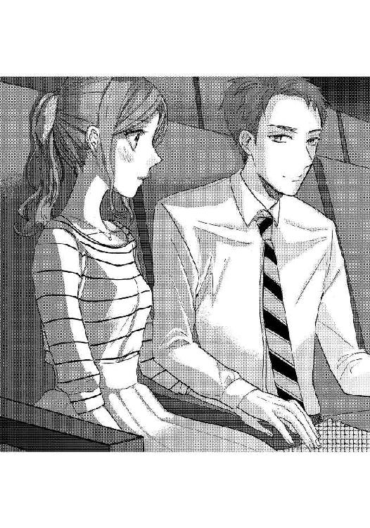
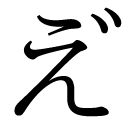
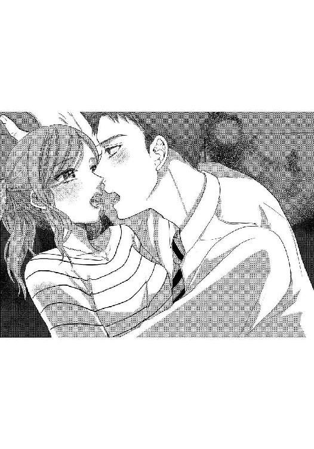
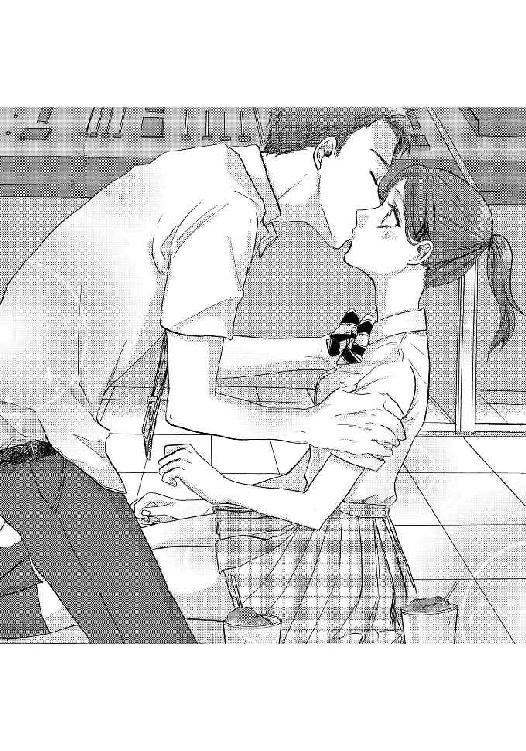
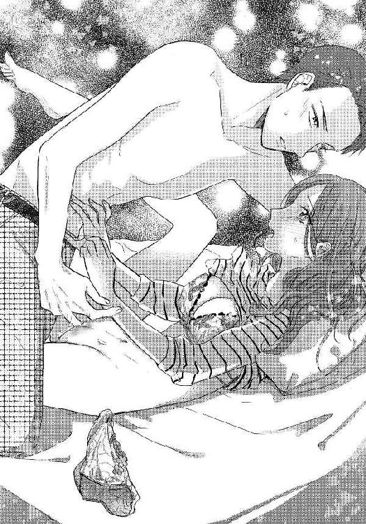

| 再会愛は暗がりの中で【イラスト入り】 (無敵恋愛S*girl) | |
| 幌井学司 | |
| 株式会社 ぶんか社 (2017) | |
株式会社 ぶんか社
再会愛は暗がりの中で
幌井学司・著
ひなた巴・イラスト
※本作品の内容はすべてフィクションです。
実在の人物・団体・事件などには一切関係ありません。
──今日は誰かに会う予感がしてたんだ。
つぐみがそう言うと、一鷹は苦笑した。
「相変わらずだな」
「何がよ」
「何でも自分の都合の良いように解釈し過ぎだろ。何だよ、誰かに会う予感って」
「もう......せっかく久々に会ったのに。そっちこそ相変わらず」
「何が」
「憎まれ口ばっかり。人がせっかく再会を機嫌よく喜んでやってるのにさー」
地元の映画館の劇場の中。まだ上映前。明かりは落ちきっておらず舞台や座席は濃いオレンジ色に染まっていて、静かに音楽が流れている。
ざっと確認したところ、他の客の影はなかった。
「だいぶさびれてるみたい」
「ここももう古いからな。作品にもよるけど。今日のはほんと、全然人気ないっぽいな」
「そんな人気ない映画に久しぶりに会った幼なじみを誘う？」
「別にいいだろ。観たくなったんだよ」
戸川つぐみと佐藤一鷹はいわゆる腐れ縁だった。少なくとも高校卒業までは。その後の進路は別々になってしまったとはいえ、幼稚園から十代の終わりまでずっと同じ学校に通っていた。
「............」
つぐみはなんとなく一鷹の横顔を盗み見る。高校生時代よりも骨ばって、もともと切れ長の目元が余計に険しくなったように感じた。苦労してるのかな、とか思う。それか単純に目が悪くなったとか。
二人とももう社会人になって数年。大人になって会社に勤めて社会に奉仕して酸いも甘いも経験して──というほどではないにしろ、もう子供ではないことは日々感じている。
そう、例えば、さっき一鷹が売店で買ったこのビールとか。
「ビール好きなの？」
「まあまあ。コーラよりは」
「苦くない？ 昔はコーヒーも苦いからって言って飲まなかったくせに」
「......よくそんなつまらないこと覚えてるな」
久しぶりの帰省。
つぐみが地元の繁華街を歩いていると、一鷹とばったり再会した。それが今から三十分ほど前の話だ。
立ち話も何だから、というような流れでどこかに入ろうということになって、それで──この昔なじみの映画館に二人で入った。
中学や高校の時に二人で遊ぶ──デートと言っていいかもしれない──の時にもよく利用していた場所。
一鷹はいったい何を考えてここに入ると決めたんだろうとつぐみは疑問に思った。
（......何も考えてないだけ？）
もう一度横顔を盗み見る。すると──。
「何？」
「何でも......」
今度は目が合ってしまった。
自然と頬が熱くなる。
つぐみは目をそらす。しかし今度は一鷹がじっとつぐみの顔を眺めてくる。見られるとこんな風にして視線を感じるんだ、とか思いながら平静を装っていると──。
「顔、整ってるよな」
「えっっ」
いきなり褒められてつぐみはつんのめりそうになった。
「な、何。久しぶりに会っていきなり何、それは。どうゆうこと」
「別に。素直な感想を言っただけで」
「素直って......。昔はそんなの言ったことなかったのに......」
「そうだっけ？ そうかも」
一鷹は一人納得してやっと視線を外してくれた。スクリーンのほうに向き直り、椅子に深く腰掛ける。
（はぁ......。もう、いきなり何なんだか......）
ただの久しぶりの再会のはずだ。
たまたまで偶然で。ばったり会ったときは嬉しくないこともなかったけれど、二人はもうとっくに〝終わった関係〟であるわけだし──。
関係、なんて言葉を使うのもどうかと思うような、十代の頃の拙い恋愛の思い出だった。
「覚えてる？ 昔さ」
「う、うん？」
「手繋ぎながら映画観てたことあったよな」
「あっ......。あったね。そういうことも。まあ......。あ、あの頃は」
思い出が蘇る。
中学三年だったか。なんとなく付き合ってるようなそんな雰囲気になって、じゃあデートでも、みたいな話になって、それから──ここに映画を観に来たんだった。
「あれは、でも......繋ぎたいとかじゃなくて。ただ肘掛けの取り合いとかしてたら......じゃなかったっけ」
「よく覚えてるな」
一鷹は苦笑した。
二人とも幼い頃から知っている相手で、当時は特に遠慮なんてなかった。子供っぽい体面で、男女として意識するほうが逆に恥ずかしいような気がして変な意地を張ったり。
今は二人とも肘掛けには手を置いていない。二人の間に一つだけあるそれは、大人のマナーとしてなんとなく空白になっている。
「肘掛け、使えば。今のうちに」
「今のうちって？」
「来年にはこの映画館、なくなるんだってさ」
「えっ、そうなの？ えー、なくなっちゃうんだ......」
「まあこの客の入りだし。仕方ないでしょ」
「でもせっかく思い出とかあるのに、残念──」
言いかけたところで一鷹にまたじっと見られていることに気付いた。
「だから今のうちに。使いたいなら使えば」
「う、うん......」
恥ずかしいことを言いかけた気がするのをごまかすためもあって、つぐみは肘掛けに手を置いた。
一鷹との間にある左腕と、誰もいないほうの右腕と、両方の肘掛けを使って椅子に深く腰掛けてみる。
なんとなく落ち着いた気持ちになって、ほぅと一つ息を吐いてみると──。
「はは、変わんないよな......」
「何で笑ってるの？」
一鷹はまた苦笑していた。
「ちょっとだらしない姿勢するとことか。昔と一緒」
「......ほっといてよ。リラックスして観たいんだから」
「俺といて、リラックスできんの？」
「え──」
いきなり言われて数秒考えてしまう。
その間に唐突に劇場内のブザーが鳴って照明が落ちた。
深く腰掛けたもののなんとなくお尻が落ち着かないような気分になってくる。一鷹の言葉が頭の中をぐるぐる回る。
「リラックスは......できるよ。普通に」
「そうなんだ。俺は結構、緊張してるんだけど」
「どうして？ 全然そんな風に見えない──」
「会えて......テンション上がった」
「あ、上がってたの？ ほんと全然そんな風に見えない」
「ずっと好きだった子と再会して、慌てて誘ったらオーケーもらえて。昔みたいに並んで座って──」
じりじりと機械音がしてスクリーンの幕が開いていく。
「え、ちょ、ちょっと待って。あの。言ってることおかしい──」
「おかしいかな。──あ。つぐみって呼んでいい？」
「あ、はい。いいけど。名前くらい、お好きなように──」
「じゃあ、つぐみ」
「............」
深く腰掛けた姿勢のまま、なんとなく動けずにいる。自分でとったはずの姿勢なのに、なぜかまんまと罠にかかったような気がした。
「──ずっと好きだった」
「きゅ、急にそんなこと言われても」
「さっき、つぐみがここに思い出があるからなくなっちゃうのは残念だって言ってるのを聞いて、嬉しかったよ」
「............」
並んで座っている。お互いの脚を見てしまう。当たり前だけど膝の位置が違う。一鷹の仕事帰りのスーツのズボンは、制服のズボンの生地と少し似ている。骨ばった膝の感触を思い出す。
「もう一回、チャンスが欲しい」
何のチャンスか、それは聞き返さなくてもさすがにわかった。
「一人でたまにここに来て、思い出してた」
一鷹がゆっくり手を上げた。
肘掛けの上にまで持ち上げる。その手の下には十センチほどの空間と、つぐみの手がある。
「............」
確認するように目が問いかけてくる。つぐみは何も言えず、動くこともできなかった。
「あの頃は、手を繋ぐ理由が欲しくて。でも言い出せなかった。つぐみに触れたいと思ってたのに。情けない話だよな」
一鷹の手が徐々に下りてくる。
「......情けないのは今も一緒かも。これから映画が終わるまでの二時間だけでも......あの頃を思い出せれば嬉しいと思ってる」
つぐみの手の甲に、一鷹の手がそっと重ねられた。

手のひらの厚みと体温が伝わってくる。一鷹の手と指の形は昔から綺麗だった。すらりと長くて骨ばっていて、爪は丸くて小さめで上品で──そして今はスクリーンの光が青い血管を映し出している。
手だけが重ねられている。重みはほとんど感じなかった。ただ置くだけ、という風に。
「......暑くなったら離せよ」
冗談めかして言って、一鷹はスクリーンに視線を移した。
迷いながら、つぐみも同じようにする。何か言いたいと思ったけれど何も思い浮かばなかった。
手を重ねたまま映画を観る。
それは二人の中で、じゃれ合うためのある種の約束事だった。
最初は映画館で肘掛けをとりあっていた。仲の良い兄妹みたいに。
それから二人きりで映画を観ている時にもなんとなく手を重ねるようになって──。
確か高校一年の時。
「やっぱ恋愛映画がいいのかな？ 文化祭だし。みんなそういう気分になってるかも──」
「よく考えろって。そういう気分になってるやつが視聴覚室にわざわざ映画観に来るか？二人で模擬店まわったりして忙しいに決まってる。わざわざ上映会に来るやつとは相容れない」
「ふーん。そういうもんか」
「そういうもん。ここは絶対アクションとか、スカッとできて無意味なやつだ」
つぐみと一鷹が通っていた高校の文化祭では、視聴覚室を使って映画の上映会が催されていた。
平たく言ってしまえば単なる暇つぶしの催しだ。行くところもやることもない生徒のために視聴覚室が開放されている。寝るために来る場所とも言われている。
つぐみと一鷹はクラスは別だったけれど、上映委員として一緒に映画を選ぶ仕事が割り振られたのだった。
「でも一本くらいはロマンチック......ロマンス？ があってもいいんじゃない」
「んー......まあ一本くらいは」
ああでもない、こうでもないと言いながらあらすじと評判を見て上映候補を選んでいく。
そして一応は候補をちゃんと観て、演目に加えるかどうか決定し、最後に教師に報告する。そういう仕事だった。
視聴覚準備室で、大きめのテレビを使った二人だけの上映会が毎日の放課後、粛々と進んでいく。
手を重ねたのはそんな日々のなかの一コマだった。
「──あ、ごめ」
「ん？ うん」
視聴覚準備室の床は防音のためにタイルカーペットが敷き詰められている。机と椅子もあるけれど、ずっと同じ姿勢で映画を観ていたら体が痛くなってくるせいもあって、二人は床に座ったり椅子に座ったりと時々移動していた。
ちょうど二人が床に座っているときに何かの拍子で手が触れて、一鷹は一度手を引いた。
だが──。
「......？」
つぐみが特に気にせず床に座ったままの姿勢でいると、一鷹の手がもう一度触れた。
当たってるよ、というのもおかしい気がして黙っていると──より大胆に手が重ねられた。
「な、何？ どうしたの」
「いや......別に」
「そう？」
はぐらかされると更に突っ込む気にもならず、手を重ねたまま映画を観続けた。
その手の感触と意味合いは、肘掛けの取り合いとは少し違っている気がした。
だからつぐみは素直にその時の感想を言った。
「なんか、こうして手を繋いでると落ち着くかも」
「え──それ本気で言ってんの」
「ん？ 私ヘンなこと言った？」
「ヘンじゃない、ヘンじゃない。ただ、俺は──」
（......ただ、何だったっけ？）
高校生の一鷹がどう言ったかを思い出す前に、いま隣に座っている大人の一鷹がふと口を開く。
「......こうしてると落ち着く」
「あ。それ私のセリフ......」
「覚えてたのか」
「......思い出してた」
正直にそう答えてしまうと、一鷹は俺もと返してくる。
重ねた手。伝わる体温。あたたかい。
大人になったんだからこんな程度は何でもないはずなのに心臓が少しずつ高鳴ってくる。
「もっと色々思い出して欲しい」
「映画も......ちゃんと観ないと」
「何だっていいんだよ。観るものは何でも。つぐみと観られるならどんな映画だって楽しかった」
やっぱり胸が高鳴る。
触れている手のあたたかさからは妙な落ち着きを感じる反面、胸の奥ではだんだん苦しさを感じてしまう。締め付けられるような、痛痒いような。
「......あの頃はガキだったよ、ほんと」
一鷹がスクリーンを眺めながら自嘲の笑みを見せた。
「つぐみのこと、傷つけたと思う」
「それは......。でも。仕方ないっていうか......。私も子供だったし」
「優しいよな。昔から......」
笑みから自嘲の色が消え、何かを思い出すようなものに変わる。
「つぐみのこと、また傷つけたいと思う」
「っ」
「あ。悪い。言い方が悪かった。そうじゃなくて！ つまり......。またつまんないことでケンカしたりさ。いや、別にケンカはしなくていいんだけど。どうでもいいことで色々言い合って、それから──」
少し慌てて弁解するのが面白かった。
重ねた手も指がせわしなく動き、一鷹が動揺していることが伝わってくる。
「そういう何気ない一言に本音が出ちゃったりするんだよ」
「......ごめん。いや......あの時もあの時も、もしかしたら傷つけてたのかもなって思って、たまに後悔とかして、思い出して。風呂で頭洗ってる時とか。ひとりでベッドで寝転がってる時とか。ぼーっと本読んでる時とか。急に思い出して、あー、失敗した、多分傷つけてたよなって、色々考えて悶々としてるうちに」
「ぷ......ふふ、あははは。一鷹でもそういうことあるんだ？」
「......あるよ。そりゃある。俺を何だと思ってるんだ」
「昔からけっこー偉そうだったよね。何でも断言するし。マイペースだし......」
「お恥ずかしい限りで」
短く言って、一鷹は自分の手で口元を塞いだ。
変わらない癖の一つだ。
本気でそういう仕草をしてるのを見たのは、あの時──。
文化祭の当日。
選びに選んだ上映プログラムだが、生徒たちにも好評──というわけではなかった。みんな視聴覚室には寝に来るだけだからだ。
視聴覚準備室では一鷹とつぐみが交代で上映機器を操作していた。
「あ、おかえり」
「ただいま。模擬店でかき氷買ってきた」
「私のぶんも？」
「券余ってたから。どっちがいい？」
「じゃ、メロン味」
カーテンが閉め切られ、薄暗い視聴覚準備室。モニターには上映途中の映画が映し出されている。よく耳を澄ますと映画の音声だけでなく、模擬店でにぎわう中庭の活気も聞こえてくる。
「んー......っ！」
「キーンてしてんの？ バカだな」
「くぅ......、うるさい！ はぁ、冷たかった......」
喉が乾いていたのもあってかき氷を勢い良く食べ過ぎた。
「ゆっくり食べろよ」
「ゆっくり食べてたら溶けちゃうでしょ」
半分憎まれ口のつもりで言い返すと、一鷹は一理あるという風に珍しく納得した。
「これ終わって、次のディスクにしたらもう最後かな」
「うん。お仕事お疲れさまでした」
高校生活初めての文化祭も終わって後片付けだけが残されていると思うと残念で寂しい気がした。
「何か......何もなかったなー......。文化祭」
「そりゃつぐみが何もしてないからだろ。上映委員なんてラクな仕事なんだし、かけもちでもすりゃ良かったのに」
「一鷹こそ。律儀に全部の映画観て確認することなくない？」
「......別にいいだろ」
「おかげで私も全部付き合うはめになっちゃったし」
「付き合えとは言ってない。俺はてっきり、つぐみが好きで観てるんだと──」
「えぇ？ うーん......それなりに楽しかったけど。好きで観てるかって言われると微妙なような」
つぐみが言うと、一鷹は苦虫を噛み潰したような顔になった。
「そーかよ。俺はつぐみと観てるから楽しかったのに」
「......え？ ん？ 何、いきなり。どういう意味」
「何観ても楽しそうにしてるし。全然退屈そうじゃなかったし。もしかしたらいい感じなのかなって思って──」
「いい感じって、何が？」
「......ニブいな」
一鷹はそれっきり黙って、口元に手を当てて何かを考えていた。つぐみはその理知的で鼻筋の通った横顔を眺めながら、シャクシャクとかき氷を突き崩していく。
甘い。けれどすぐ溶けてしまって、ストローの先にある氷の感触はどんどん頼りなくなってくる。
「かき氷。食べないの？」
「ああ」
どこか上の空の返事。
風なんて入ってくるわけがないのに、視聴覚室の重くて黒いカーテンが揺らいだように感じた。
かき氷のカップをじっと眺めてから脇に置き、一鷹が一歩踏み出す。
そして、床にだらしなく座っていたつぐみの前に膝立ちになった。
「どうしたの。急に真剣な顔になって」
「......手つないだりもしたしさ。もしかしたら......とか思ってたんだけど。俺の勘違いか？」
「え、と......」
一鷹の手がつぐみの肩にかかった。
ゆっくりと。でも決して優しい雰囲気ではなく、それなりに力はこもっていた。
その瞬間、ＤＶＤのデッキを見てしまった。顔を背けて視線を反らしてしまったからだ。
「嫌なら嫌って言えよ。今までもそうだし、今も──」
一鷹の顔が近づいてくる。
「つぐみが何考えてるのか全然わかんねえ。でもそんなところも──好きだなって思う」
「────」
更に顔が近づく。なぜか拒むことはできなかった。
額と額が触れるほどの距離。つぐみはやっと顔をあげた。
視線が絡む。真剣な眼差しにどこか気圧されて、同時に男の欲情や欲望みたいなものを感じて、反射的に怖いと思った。
ただ、恐怖で体が全く動かなかったというのは正確ではないと思う。これから起こることにどこか期待もしていて──。

目を閉じた。
数瞬後。
唇に触れる。柔らかくて冷たい感触。どうして冷たいのだろうと考えて、かき氷を食べていたからだと気付くまでの数秒。
唇と唇はずっと触れていた。
それから一鷹は──。
空気が流れる。
横でビールのカップを勢い良くあおった一鷹の仕草で、つぐみは現実に引き戻された。
頭の奥にずっと残っている初めてのキスの思い出だった。
「......あのね」
思い出したまま、つぐみは単純に言った。
「嫌じゃなかったよ」
「......え？」
空になったビールのカップを持ったまま、一鷹が固まる。
それから一つ咳払いをして、ひとまずカップを置いた。
「ごめん。私がいつもはっきりしなくて」
「あ、ああ」
上映は刻々と進んでいる。今は前半の盛り上がるシーンで、派手なアクションが映し出され、音響が勇ましく響いている。
その騒がしさに紛らわせるようにしてつぐみは早口で言った。
「一鷹にされること、嫌じゃなかったと思う」
「......っ」
当時はわからなかった。だって比較する対象もなかった。
だけど今になってみればわかる。こうして手を重ねられることも、他に許せる相手なんていない。
あの頃、戸惑いながらも受け入れることができたのは、想いがあったからじゃないかと考えた。今になって納得できるような理由を探してるだけかもしれないけれど。
「今さらこんなこと言って、ズルいかも......良くないよね」
「そんなことない。今さら、なんて言葉はきっとないんだよ」
「どういうこと？」
「昔のこと、今のこと、それと未来のこと。同じ出来事でもいつも意味は違ってくるんだよ。昔はわからなくて、今になってわかることがあって当然だし。昔はわかってるつもりでも、今考えるとわからないことだってある」
「......うん」
「未来のことだって。学生の時に考える社会人と、今の自分は全然違う。昔考えてたことをバカだったなと思うことはあるけど、悪いとは思わない。良いとか悪いとかはないんだよ」
そこで一鷹は言葉を区切った。
重ねた手に一度、軽く力を込める。
手の甲をさらしているつぐみの、指と指の間のくぼみに長い指を重ねるようにして。
「だからいつだってやり直せる。いつだって、今この瞬間に、別の意味が生まれてくる......。ていうかさ」
一鷹がまた言葉を切って、急に肩の力を抜いた。
椅子の背もたれから背中が離れかかっていたところで座り直し、再び深く腰掛ける。
「俺、今必死に口説いてるんだけど。わかってる？」
「え──。あ。そっか」
「そっかじゃないだろ。ニブい......んじゃないな。そういう言い方はもうやめよう。素朴で素直で......何でも楽しいって思っちゃうんだろ」
「ニブいって言うより酷くない？ 別になんでも楽しいわけじゃないし」
「ま、でも今ならわかるよ。昔はつぐみのそういうところ、何だかなぁとか思ってたけど。今は......可愛いところだと感じる」
「そ、そういう急にストレートになるところ、昔は意味わかんなかったけど......」
今なら。少しはわかる。
持て余すような気持ちがあること。
それを世間では情熱とか慕情なんて言葉で表現すること。いつも二人の間にモヤモヤした何かがあって、それが不愉快だったり、うまく受け止められなかったりしたけれど──その正体こそが恋愛であるかもしれないこと。
「一鷹のすることだって、昔はほんとに意味わかんなくて、本気なのかどうかもわからなかった。でも本気で、必死だから伝わらなかったりするんだよね」
「何気にけっこう酷いこと言ってると思う」
「そう？ でもそういうものじゃないかな。男女だし。幼なじみで、普段は相手のことがわかっても、急にオトコとオンナ、みたいになったら、きっとわからなくなるんだよ」
「......甘えてたかもな。いつもならわかってくれるのに、どうしてわかってくれないんだろうなって」
重ねられた手に再び力がこもった。
つぐみもなんとなく指を動かして、ジャンケンでいえばパーの形に指を開いた。
すると──指と指の間に一鷹の指がするりと入り込む。
手の甲でする恋人繋ぎの形になって、頬が一気に熱くなった。
「......嫌じゃない？」
「嫌ではないよ。戸惑うっていうか......恥ずかしいけど」
つぐみが自ら指を広げたのだ。こうされることをあらかじめ知っていたみたいに、一鷹にされたことに驚きはしなかった。
「つぐみ。やり直したい」
「その、やり直すっていうの......何か大げさじゃない？」
「いや。もっと具体的に。二人で映画観て、手繋いで......それから初めてキスした。そこからもう一回、やってみたい」
「あ......」
指に指が深く絡む。
「あの頃みたいに。でもあの頃とは違う」
「......うん」
「今も好きだし、今こそ本当に好きなんだと思う」
重ねていないほうの手が伸びてきて、つぐみの肩を優しく覆うように抱き寄せた。
お互いの顔が近づいていく。
視線は交差し続ける。
劇場の暗がりの中で一鷹の瞳が揺れて、つぐみはその瞳の色にまっすぐなものを感じ取っていた。
「するよ」
「............」
短い言葉。
明確な返事を返せないまま、顔と顔が近づいて、唇の粘膜が──触れる。
その瞬間、ぽっと火が灯ったように感じた。
唇の先。
胸の奥。同時に。
「ん......」
どちらがあげたともしれない声が、映画の音声に紛れながら微かに響く。
一鷹は重ねた指をほどいて、つぐみの手首を掴んだ。
ほんの少しだけ暴力的に、押さえつけるような姿勢になって──更に唇と唇での接触を続ける。
微妙に息が苦しくなって目を開ける。すると一鷹も目を開いていて、間近で見つめ合う形になった。
その瞳はまだ揺れていた。お互いに目が合ったことを認識して、臆病にも感じるくらいに動揺したように見えて──けれど唇が離れることはなかった。
重ね合わせたままでいると、唇の表面に次第に唾液が漏れ出してくる。
（......甘い）
あの時は冷たいと思った。かき氷を食べていたから。それにシロップの甘さもあった。
今は──それとは違う甘さを感じた。
口付けはどこまでも甘美で、郷愁と官能を同時に刺激する。思い出から別の意味が立ち上がる。
「つぐみ」
「ん......、ぁ......」
名前を呼ばれると胸の奥がちりちりと焼けつくようだった。
「あ......！」
唇の表面に、舌らしき感触が触れた。思わず声をあげてしまう。昔と一緒だ。
一鷹はどうすればつぐみが喜ぶのか知っている。
「ここ、やっぱり好きなんだ」
「ん、ぅ......」
短いセリフのすぐ後に、また舌が唇を舐める。左右に。何かを優しく操るみたいに舌先がなぞる。
「それ、だめ......」
思わず言ってしまった言葉。漏れ出た声に一鷹はぴくりと反応し、舌を引っ込めた。
つぐみは安堵する。それが伝わったのだろう。しばらくは何もしないまま、ただ唇を合わせるだけの状態を続けてから──ゆっくりと体を離す。
「昔は、ごめん。つぐみの気持ちなんて全然わかっちゃいなかったのに、こんなことばっかりして」
「ううん......」
曖昧な返事をしながら、つぐみはまた記憶に想いを馳せる。
初めてのキスをした文化祭から、二人の拙い恋愛が始まった。
だけど何をしたらいいのかなんてわからなかった。
ただ家が近所だから一緒に学校に通って、昼休みは一緒に過ごして、帰りも一緒に帰る。ほとんどがその繰り返しに過ぎなかった。
けれど──違ったことが一つ。
「だめ......、だめだって」
「なんで？ 誰もいないし」
二人きりになれるタイミングがあると、ほとんどところ構わずキスをした。
一鷹は唇を合わせる行為が好きなようだった。それ以上に、つぐみの体のどこかに唇で触れるのが好きなようだった。
「じゃ、手の甲にする」
「もう......」
文化祭以来、昼休みは時々視聴覚準備室で過ごすようになっていた。他に誰も来ないから。
「あ......」
室内の空気は濃密にこもっている。
分厚いカーテンとカーペットと、防音の窓。雑多に並べられた映写機器に囲まれた二人の場所。
つぐみがしぶしぶ差し出した手をとって、その甲に一鷹が口付ける。
唇の湿った感触と──。
「ん......っ」
肌を吸われるときの引きつるような感覚。
「あ、こら......、舌は......」
手の甲の腱に添ってぬめる舌が触れてくすぐったい。だけどくすぐったいだけじゃない。
もう肌を吸われていないのに引きつった感覚は大きくなって、熱く痺れてくる。
その痺れのどうしようもなさに戸惑っているところで、一鷹と目が合った。
「すげー可愛い」
「......うそ」
テレビでやっていたサバンナの映像を思い出す。
肉食の獣と目が合ってしまった草食動物は、一瞬立ち止まってしまうのだ。相手が動き出すのをなぜか待ってしまう。見つけた瞬間、さっさと逃げればいいのに。
それと同じようにつぐみは動けなくなって、椅子に腰掛けた姿勢のまま固まる。
一鷹はそれをいいことに上体を持ち上げ、顔に顔を近づけてくる──。
「あ」
「な、何？」
「ミントの匂いする。歯磨きしたんだ？」
「......っ」
見透かされたみたいで嫌だった。
だって、学校の中で一鷹と会って、もし
〝そういうこと〟をされたときに──自分でもどう説明したらいいのかわからないけれど、不快に思われたくなかった。
「その気だったってことだよな。期待してた？」
「ちがう......。ちがうよ。ただ、ご飯食べた後だから......」
「そういうことにしといてやるよ」
偉そうに決めつけられて腹が立つ。けれど間近に顔が近づいてきて、手が頬を這うともう何も言えなくなった。自然と目が潤んでしまうのも恥ずかしく思う。
頬に当てられていた手が移動して、耳に触れた。
一鷹の両手がつぐみの耳を塞ぐ。水中に、あるいは宇宙にいるみたいに音が遠くなって──。
口付けが始まった。
「ん......っ」
唇の粘膜をこすり合わせながら、耳に当てられている手の熱さを意識する。一鷹も興奮してるんだと思う。欲情してる。欲望を向けられている。
「ぁ、はぁ、ぅ......、んん......!?」
耳を塞がれているせいで、口内の音の響きが全然違った。粘り気と水気を含んだいやらしい音が自分の中で反響してしまっているのがわかる。
「や、やだ、これ......」
「好き？」
「ぅ、んぅ......、く......ぁ......！」
好きなわけないよと返そうとしたがかなわなかった。唇を強く押し付けられ、舌が口内に侵入してくる。
前歯は閉じて舌を押し返そうとする。拙い必死の抵抗。それがすぐに破られてしまうことはつぐみ自身にもわかっていた。
「はぁ、あ......っ」
舌先が歯の付け根に触れた。一鷹とキスを繰り返すようになるまで、そんな場所がくすぐったさを感じるなんて想像したこともなかった。
尖った舌先でくすぐられ、顎にだんだん力が入らなくなっていく。
「あ......ぅう......」
「前歯、すげーつるつる。気持ちいい」
歯を磨いていたせいで一鷹の気分をさらに良くしてしまったらしい。ますます興が乗ったという雰囲気で、舌が口内を這い回る。
（音でおかしくなりそう......）
がく、がく、と自分の肩が震えてしまっているのがわかる。
直接頭の中で卑猥なキスの音が響いて本能を痺れさせた。
学校なのに。昼休みなのに。二人きりだからってこんな場所で。そもそも何の理由もなくキスなんてするものなのか。
つぐみの思考は乱れてまとまらず、どうしようもなくなったところで舌が完全に口腔の奥へと侵入してきた。
「んん......！」
もう体に力が入らなかった。
だらしなく椅子に腰掛けているのがやっとで、頭の奥が白く明滅する。
（キスがこんなに──、切ないなんて）
本当は〝切ない〝なんて綺麗な単語で表せないものを感じてしまっているのかもしれない。そんな自分の背徳を一鷹に掘り出され、突きつけられているようでなぜか悲しかった。
「ちゅ......んく、ぅ......、はぁ......」
どちらが出したともしれない吐息と吸い上げる音。
「飲んで」
「ん......！」
ついで口内に感じたのはさらりと流れる感触。少しだけ質量を感じるそれが舌の上を流れてきて反射的に飲み込んでしまう。
（飲まされた......っ）
一鷹の唾液だ。
体内に自分とは違うものが入ってくる感覚。熱いものが喉を通り抜け、食道をくだって胃に落ちてぽうっと不可思議な熱を灯す。他人の唾液なんて不快なはずなのにほとんどおぞましさは感じない。ただどうしようもなさだけが胸の奥でわだかまる。
耳はずっと塞がれたままで、ごくりと自分が嚥下する音が響いたのも酷く卑猥だった。
「ぁ......はっ、あ......だめ、もぅ、やめて......」
「まだそんなこと言うんだ」
どこか苛立ったような一鷹の声。びくりと反射的に体が震える。
幼い頃から知っている彼の姿とは違う、獣みたいな熱が伝わってきて、本当に草食動物のような気分になってしまう。
襲われて圧倒されて組み敷かれて、あとは食べられるだけ。
「んん......！」
舌の根からも力が抜けてしまったところで、文字通り食べられた。一鷹の舌がつぐみの舌を引き出して、強く吸ったのだ。
痺れるような感触が一気に強くなる。
吸われながら更に舌に舌が絡み、またいやらしい音が頭の中で鳴り響く。
「つぐみ」
「......っ、ぅ......」
名前を呼ばれてもほとんど反応できない。耳を塞がれていても声が聞こえるのは、口内で響いて鼓膜に届くからだとぼんやりと痺れた脳が弾き出す。
「つぐみは、俺のもの」
「ぁ、う......、んん......！」
「好きだ」
唇が離れていた数瞬の間の、たった二つのセリフ。キスし続けて酸欠状態になった脳に強くインプットされた。
だから未だに覚えている。
あの時と同じように、一鷹の顔が目の前にある。
違うのはここが視聴覚室ではなくて映画館だということと、あれから十年近い時間が流れたこと。
「あの頃はごめん。つぐみの気持ちなんて考えずに、こういうことばっかして......気持ちをぶつけてた」
「う......ううん」
思い出したせいで目が潤んでしまっている。スクリーンの光で見えていませんようにと祈る。
「どうしてもつぐみが欲しくて」
「......うん」
「他にどうしようもなかった」
見つめ合う。
まっすぐな視線だった。
あの頃とはどこが違うんだろうと考える。
ただ真摯に考えてくれていることは伝わってきた。
昔はキスをして、し続けて、何度も唇を重ねて、その先にあるものが何なのか二人ともわかっていなかった。いや、薄々わかっていた。
大人になるまでにまだ長い時間がかかることをわかっていた。
だからあの時にどれだけ唇を重ねても満たされなかったんだと思う。
幼なじみでずっと付き合って、そのまま大人になってずっと一人の人と恋人同士のまま結婚まで。そうなることは不可能ではなかったけれど、そこまでの自信も確信もなかった。
確かめるように唇を重ね続けるしかなかった。
「待ってた......のかも。私......」
「ありがとう」
一鷹は唇の端をゆるめて破顔する。
そして──つぐみから一旦手を離して、座席の肘掛けを下から押し上げた。
ガコン、と音がして二人の間の肘掛けが立ち上がり、座席と座席の間に収納される。
「え、何これ──こんなのできたんだ」
「三年前くらいに微妙に改装してさ。なんかできるようになったんだよ。ペアシートとか言ってチケット売り出そうとしてたみたいだけど」
「あはは......、それでもお客さん増えなかったんだ？」
「ほとんど誰も使わなかったみたい。今は宣伝もしてないし。おかげで知ってるのはずっと通ってた古い客だけ」
やや中途半端だが、肘掛けがなくなって文字通りペアシートのような状態になった座席。
「つぐみ」
「うん？」
「いいか」
聞きながら、一鷹が腕を伸ばす。つぐみの首筋の後ろを手が通って、肩に触れて──ゆっくり抱き寄せる仕草。
「......うん」
つぐみの返事を聞いてからやっと一鷹の手に力がこもる。
隣り合った座席で肩を寄せ合って、厚みのある筋肉の感触を服の布地越しに感じた。
「キスも。もう一回。するよ」
「ぁ、ん......っ」

するよ、という言い方に焦れったい熱がこもっていた。今の一鷹のことだから、本当はしていいかと聞くつもりだったのかもしれないとつぐみは考える。
でも我慢できなくなって、するよというセリフに変わってしまったのだ。きっと。
キスを受け容れることを示すために、つぐみは体重を横に預ける。
「......嬉しい」
軽い口付けの後に一鷹が再び口を開く。
「昔は、将来のこととかも何もわかってなくて。一緒にいたかったけど、ずっとは無理かもしれないって勝手に考えて」
「......私も」
「頭ではどうしたらつぐみのためになるのかって一応考えてるはずなのに、二人でいるとどうしよもなく思えて......イライラしてた」
「うん。進路の話になったら、全然余裕なかったよね」
「......それも悪かったよ、ほんと」
「ううん。私もどうしたらいいのかわからなくて。全然フォローもできなくて......」
「俺のものだ、とか言ってたの、覚えてるかどうかわかんないけど......。そんなこと言っちゃってたくせに、本気でつぐみの進路とか、将来を縛る強さはなかった」
「覚えてるよ」
「ほんとよく覚えてるよな。アレはまあ......なしで」
「なしなんだ？ かっこよかったのに」
「......からかうなって」
珍しく一鷹から一本とれた気がしてつぐみは笑った。
「あ、笑った。可愛い」
「......バカ」
「ま、とにかく......今ならとりあえずは遠恋でも全然構わないし。とにかく......つぐみの嫌がることはしない。無理強いもしない」
高校卒業で進路が別になることがわかって、当時の二人の関係はいっそう過激になった。
深まったというわけではなく、ただお互いを強くぶつけあうほかなくなってしまった。
一鷹は地元に残りたい。つぐみは地元から離れて一人暮らしをして専門学校に通いたい。
そんな風にして二人は卒業後に離れることが決定してしまった。
変に大人ぶって、人生はそういうものだなんて風に考えていたように思う。
つぐみは三月生まれだった。
だから十七歳の誕生日は、三年生になる直前の、不穏な気配がする春休みだった。将来の形がなんとなく見えてきて、ただのクラスメイト相手でももう長くは一緒にいられない寂しさを感じることがある。
一鷹とつぐみにとっては尚更で、そして二人には向き合う勇気がなかった。
それなのに体は成熟しかかっていて、欲望だけが前に出てしまう時代。
誕生日の昼間に、一鷹の部屋で──二人はまた唇を重ねていた。
「ん......、ぁ......、はぁ......。や、やだよ、もう......、こんなことばっかり」
「......なんでだよ。俺たち付き合ってるんだし」
若さと未熟さそのもののセリフ回し。
そして〝付き合っている〟という言葉には注釈がつく。〝今は〟付き合っている、という風に。
卒業後に進路が別になってしまうことで、暗黙のうちに別れてしまうしかないという結論を出していた。二人とも、卒業後のことを相手に確認して話し合うような、正の方向の気力を持てず──また相手が言い出して来ないことに心のどこかでほっとしていた。
そういうものだよね、というメタファーが会話と行為の端々にあふれ、二人をますます孤独に追いやっていく。
一緒に時間を過ごしているのに。
唇まで重ねているのに。あるいはだからこそ──触れれば触れるほど寂しさだけが満たしていく。
「そういえば......十七歳の誕生日。おめでとう」
「う、うん......。ありがとう」
「あのさ。ずっと前に言ってたよな」
「うん？」
「初めて......をするなら。十七歳の誕生日がいい、って」
「え──」
つぐみは目を丸くする。
何かの拍子に、映画か何かからとったそんなセリフを言ってしまったことはあるかもしれない。
だけど本気ではなかった。当たり前だ。
「............」
「......っ」
両親のいない家。二人きりの部屋。
いつも半ば無理やりキスされて、それを許してきてしまったことがつぐみの胸に濃い影を落とす。
一鷹の瞳が欲望の色にけぶっているのを見て、また動けなくなってしまう。
同時にバカだなと思う。つぐみの軽口を覚えていて、誕生日のこの日に会おうと一鷹のほうから言い出したのだ。てっきり普通に祝ってくれるものだと思っていたのに。
「つぐみ」
「あ......」
肩に男の手がかかる。体重をかけられて動けなくなる。
一鷹の腕がつぐみを抱き寄せようとする。
嫌だった。
しかし、心のどこかではきっとわかっていた。一鷹が本気でそういうことをしたいと思っているわけではなくて、ただどうしようもなくなってしまっていること。
将来への諦めや焦りや、あるいは全く別の憧れや希望にすら突き動かされて、体を求めるしかないと思ってしまうこと。
まだ子供で弱い自分たちが情けなく可哀想だと感じた。傲慢かもしれないけれど、つぐみは自身にも一鷹にも憐憫を注いでしまう。
「いや......」
「っ、つぐみ」
そしてその全ての想いを説明しきることは全くできなくて、ただ幼なじみに恐怖と嫌悪感を抱くことしかできなかった。
「泣いて──」
「え？」
言われて反射的に顔を上げると、涙が頬を伝い落ちていった。
苦い思い出に胸を満たされてしまってつぐみは大きくため息をついた。劇場のスクリーンでは後半のクライマックスのシーンが映し出されている。
あの頃は、どうして泣いてしまったのかわかっていなかった。目の前にいる、欲情した男の子が怖くて泣いてしまったのだと思っていた。
だけど今ならわかる。
あの涙は無力感から流れたものだった。
「......思い出してた？」
「......うん」
一鷹の問いかけにつぐみは頷く。
そんな一言だけで通じ合っているのがわかる。
「つぐみをもう泣かせたくない。ごめんな」
「ううん。私も......もっと色々言ってあげられればよかった」
「ほんと、ガキだったよ。あの誕生日の日に泣かれて、びっくりして......でもそれからしばらく経って、やっと色々わかったんだけど」
時は既に遅し。十七歳の誕生日が結局何もせずに終わった後、二人はほとんど話さなくなった。そして三年生になっていくらか経れば、もう将来に向かって動き始めるしかなくなってしまう。
その忙しなさの中に逃げ込んでしまった。
「......どうすれば償えるかな」
「......もういいの」
つぐみが短く答えると一鷹は身じろぎする。
触れた肩と肩。
今は二人は見つめ合わず、スクリーンのほうを見ている。
「こんな風にさ」
「うん？」
「二人で同じものをなんとなく見てられれば良かったんだけど」
「......うん。あの頃はお互いとか、自分ばっかり見てて......どうしてわかってくれないんだろう、前に進めないんだろうって思ってたかも」
「前を見てないんだから進めるわけなかった」
肩を寄せ合って、それから膝の上に置いた手に手を重ねた。
「見てるものなんて、何でも良かったのに。つぐみと見てたら楽しかったんだから」
「うん。......えっと。これから......これからね？ また......同じものを見ていられれば──」
「それって」
ぴくりと重ねた手が反応する。
一鷹はスクリーンを見ながら唇を一度強く引き結んだ。考えながら、慎重に言葉を選んで言う。
「これからは......、一緒に。同じものを見てられると思っていい？」
つぐみもあえて隣を見ずに、前を見たまま答えた。
「......はい」
姿勢は動かさないまま、重ねた手にこもる力だけが強くなる。
映画の上映時間は残り二十分ほどだった。観ているものは何だっていいという言葉の通り、二人は肩を寄せ合って、いつしか頭を預けあった。
一鷹の髪の感触を頬に感じながら重ねた手で手遊びを続ける。
時々言葉を交わして──何もかもやり直して、すべて確かめ直して。
映画館はさびれかけているけれど、一応は地元の繁華街。男女がペアで休憩するためのホテルも徒歩圏内にある。
「つぐみ」
ラブホテルの部屋に入ってすぐ、一鷹はつぐみの頬に手を添えた。
「ま、待って──」
「がまんできない」
「さっきもしたんだから──あっ、ん......！」
ゆるく抵抗するつぐみの手首を壁に押さえつけながら、一鷹は唇を重ねた。
性急で少し強引なところは一鷹は小さな頃からちっとも変わらなかった。マイペースで、何でもいつかは自分の思い通りになると思っているところにたまに腹が立つ。
「んく......、はぁ、ぁ......」
でも、つぐみはそんな彼に付き合ってあげるのが多分好きなんだろう。唯一彼のことを嫌だと思ってしまったとき──それは高校三年の時に、進路や将来が自分の思い通りにならないことでくすぶっている一鷹だったからだ。
（いいよ、もう......。したいようにしなさい）
したいようにできるだけの実力を備えて、一鷹はつぐみの前に再び現れた。
「好きだ」
「ん......っ」
お決まりの断言の告白。
そして──つぐみの太腿の間に一鷹の膝が割り込んでくる。
「え......、あ、ん......っ」
「......嫌じゃないよな」
「う......、び、びっくりして......っ」
「......くそ。可愛いな」
肩を軽く押さえられた。
差し込まれた膝に体重をかけさせられ、つぐみの体は一鷹の腕の中に深く抱かれた。
「ぁ......は、べ......ベッド。行かないの......？」
「なんだよ、そのセリフ。自分からおねだりなのか？」
「ちが......っ、ん、んぅ......！」
再会していきなりホテルに行くなんて、一鷹が相手でなければ許すわけがなかった。
おかしな言い方だけれど、一鷹が相手でもあの誕生日の思い出がなければ許すわけがなかった。
特別。本当に特別。
そう言葉で弁解したくなったところで──。
「......からかってごめん。ベッド、行かないとな」
「......うん......」
その一言で特別なことであると理解してもらっていたと知る。
唇を離してゆっくり見つめ合う。
それから一鷹はつぐみの前髪をかきあげて、その額にキスをした。
長く。額の肌に湿った唇の感触が十秒近く触れる。
「ぅ......」
「ピリピリしてきた？」
「え？」
「キスされたところがだんだんピリピリしてくるって、昔言ってた」
「そ、そんな恥ずかしいこと言わない......」
初めてキスをしたばかりの頃に、特に深く意識はせずに無邪気に言ってしまった覚えがあった。
「うそだ。ていうか絶対自分でも覚えてるだろ。つぐみは滅多にうそつかないから、ごまかしてるとすぐにわかる」
「またそうやって決めつける......」
「いいんだよ。あの頃から俺は知ってる。つぐみが敏感なタイプだってこと」
恥ずかしさで顔が熱くなる。
すると──さっき唇が触れていた額が痺れ始める。これじゃ一鷹の思うつぼだとわかっていても体の反応は止められない。
キスだけでいつも体が熱くなって、痺れていた。
何度もされた。
二人一緒ではない空白の時間が長くても、十代の頃の経験を体はよく覚えている。勉強でもスポーツでも、十代の頃に身についたものと二十代以降に身についたものでは別格だ。
「......いい顔してくれるよな」
自分がどんな顔をしているのかつぐみにはわからない。ただ一鷹の欲望が高まっていることだけはわかる。
そしてあの頃と違って今ははっきりとした自信と強さも感じた。だから──その欲望に身を投げ出してしまいたくなる。
「ほら、こっち」
一鷹が体を屈めて腕を差し出した。
数瞬迷ってから、つぐみは自分の体重をすべて預けてしまう。
「軽いな」
「高校生の時、一番太ってたし......」
「今が痩せすぎなだけだろ。昔くらいでも俺は全然──」
「も、もう変なことばっかり言わないで」
一番恥ずかしくてシリアスなところにこれから差し掛かろうとしているのに、自然と憎まれ口を言い合うような雰囲気が復活しているのが不思議だった。
つぐみの心が緩んだところにするりと入り込み、一鷹は簡単にその体をベッドに運んでしまう。
ぽすん、と間の抜けた音がつぐみの背後で鳴る。
優しくベッドに投げ出された。
次に膝のあたりでギシリと重い音が鳴る。
一鷹がベッドに上がり、上半身に覆いかぶさってきたからだ。
「............」
だが彼はすぐには行動を起こさなかった。
覆いかぶさった姿勢のまま、じっとつぐみの目を見つめる。
その瞳を見返しているうちに、言うべきことを思い出す。
「もう泣かないよ」
「ああ。絶対そのはずだと思ってたよ。でも確認するのは悪いことじゃないし......これからすることを考えたら」
「......ありがとう」
「別に礼を言われることじゃない」
「私は、だいじょうぶ」
つぐみが告げると一鷹は自分の口元を覆った。
どうして恥ずかしいときの仕草を今するんだろうと疑問に思ったが──。
「......すげー燃える」
その言葉と、続けてされたキスの激しさで謎は氷解した。
何気なく言った一言で、一鷹の欲望にますます火をつけてしまったらしかった。
「んぅ......！ はぁ、あ......！」
いきなりの深いキス。舌がすぐに口内に侵入してきて、口腔の内側をくすぐる。
ベッドがきしむ。一鷹が本格的に覆いかぶさってきて、つぐみをますます動けなくした。
抵抗する気はない、けれど、もう全く抵抗できない姿勢であることがつぐみの胸の奥を熱く焦がす。
キスしながら一鷹の手が肩に触れる。首筋をそっと撫でてから鎖骨のくぼみを確かめ、それから胸へと下りていった。
「ぁ、はぁ......、ん......！」
「つぐみは、俺のだ」
今のそのセリフには深い実感がこもっていた。焦りからくる子供っぽい宣言ではなく、確実に手に入れて落とすという迫力が感じられた。
言葉に打たれて耳たぶが痺れ、ほとんど何もされていないのに体が震える。
「んく、ぁ、はぅ......んく......っ」
激しいキス。舌を吸われ、唾液を嚥下させられる。喉や胃が飲まされたもので熱くなったところで、思いのほか優しく胸をまさぐられた。
「あ......っ」
思わずか細い声が漏れてしまったことが一鷹を喜ばせたらしかった。
つぐみの体に触れているものが三つある。唇と手と──それから太ももに当たる熱くて固い感触。
一鷹はとうとう自分の興奮と欲情の証をつぐみに擦りつけていた。
「つぐみ」
「ん、ぁ......、なに......？」
「軽くでいいから。俺の、さわって」
「え──」
手首をエスコートするように掴まれて、股間にまで導かれた。

「さ、さわるって──」
「無理はしないでいいよ。そのまま......撫でてるだけでもいい」
まだズボンは履いたまま。だからいくらか抵抗感は薄れ、つぐみは言われたとおりにそこを撫でる。
「......こう？」
「っ、そんな感じ......。俺もさわるよ」
「え、あ──」
一鷹は有無を言わせぬ仕草でつぐみの下半身に手をかけ、一気に裸に剥こうとした。
「あ、まっ、そんな──」
「大丈夫。変なことはしないから」
「......もうしてるよ......」
「そうかもな。......ゆっくり。少しずつするから」
今度は一鷹が丁寧につぐみの下を脱がせていく。時々つぐみの目を見て。確かめるようにしながら。
そこまでされると受け入れるしかなくて──いつしか下半身を裸にされ、一鷹の指での愛撫を許してしまう。
「あ......、んん......！」
「やっぱここも敏感なんだ」
「変なことばっかり言わないで......っ、ぅ、あ......っ」
指がゆっくりと上下する。スムーズに。
どうしてスムーズに動かすことができるのかを考えると、つぐみは顔を覆いたくなる。だけど片方の手は一鷹の股間に置いたままだ。
何だか悔しいような気がして、つぐみも手を動かしてその固い盛り上がりを撫でる──。
「気持ちいいよ」
「そ、そうなの......？ ぁ、ん......っ、はぁ、はぁ......」
しばらくお互いに愛撫し合う行為を続ける。
動かし方はわからなったけれど、なんとなく──。
「もしかして、俺の真似してる？」
「え？」
「指と動きが一緒」
「あ──」
言われてやっと気付いた。一鷹の指がスリットを上下するタイミングと合わせて、つぐみも手を動かしてしまっている。
「すげー余裕なさそう。可愛いけど」
「だ、だって......」
「俺はこのままでもいいけど、つぐみが大変かな。いいよ、手離して。力抜いて」
「......」
優しく言われて自然と脱力してしまったところで、一鷹の指が動く。
「っ、あ......！」
粘膜を上下しているのがわかる。
どうしようもなく疼く感覚が強くなったところで──。
「んん、んむ......！」
今度は唇を塞がれた。
深いキス。
舌と舌を絡ませ、唇を擦り合わせる。貪られ、つぐみが夢中になっているうちに一鷹は自らもズボンを脱いだ。
「あ......、それ」
「見えた？」
視界の端に滾ったペニスが映った。
「キスしたまま......少しずつ。痛かったら言って」
「ん、んぅ......っ」
再びゆるく唇を重ね合わせたところで、つぐみの秘部に指とは全く違う熱い感覚が現れた。
触れている。
意識する。丸みを帯びた、硬さと柔らかさを同時に備えた剛直。
「あ、あぁ......っ」
ゆっくり、何度も何度も前後しながらそれが少しずつつぐみの体を割り開いていく。
みっともないうめき声をあげてしまうのが嫌だった。
けれどどうしても喉が鳴いてしまう。
キスの感触に逃げ、一鷹の背中に強くつかまって耐える。
どれくらい時間が経ったかわからない。
「あ──はっ、ああ、はぁ、はぁ、はぁ......っ」
必死に耐えているうちに、気がつくと一鷹の前後の動きが収まっていた。
「かずたか......っ」
「......全部入った」
「本当......？」
「ああ。......すげー気持ちいい......、ていうか、嬉しい。......嬉しいな」
「私も......」
実感のこもった繰り返しに胸が熱くなる。
「あ、ちょ......！ 締めつけ、やば......」
「え、あ──、ん......！」
嬉しさに胸が震えると同時に、つぐみを貫く感触がひとまわり大きくなったように感じた。
「何もしてないのに、これだけでほんとやばいくらい気持ち良くて......。何か十代の時に戻ったみたい」
「そう、なの......？」
つぐみには言葉の意味を考えている余裕はなかった。ただ繋がって一つになっている喜びに満たされて、愛しい人の声がふわふわと頭のなかに響いてるだけだ。
「私は、大丈夫──」
「......っ」
そのセリフで一鷹の瞳に火がつく。まっすぐな欲望に貫かれ、つぐみも下腹が強く疼いた。
痛みはほとんどない。苦しくないといえば嘘になるけれど、喜びが後から後から流れて負の感覚を洗っていく。
「動くよ。けっこう、すぐ終わると思うから──」
「うん。好きなように......して？」
ほんの少しだけ狙った。一鷹が絶対喜ぶであろう言葉のストックから出してきた。それが見事に的中したことは、体の奥に感じる熱さと圧迫感でわかった。
「あ、ん......！ ぁ、あぁ......！」
ぎしぎしとベッドが静かに揺れる。
動きは激しくはなかったけれど、丁寧で力のこもったものだった。ねっとりとした重さが体内を移動しているように感じる。
「背中......爪立ててもいいよ」
「ん、ぅう......っ！」
自分がどんな風に背中を抱いているのか今はわからなかった。そんなセリフを言われるということは本当に爪を立ててしまっているのかもしれない。
一鷹の感覚はひたすら強かった。多少の痛みでは揺らがない、強さと重さ。体内の熱いペニスの感覚以上に、抱いている背中を近くに感じた。
「抱き、しめて......っ」
「わかった」
その近さがもっと強くなる。ひとつになるという言葉の意味を知る。背中を抱く腕がお互いの体に埋まっているみたいだった。
一鷹も腰くらいしか動かすことができない姿勢。
ぐりぐりと最奥に押し付けられ、ノックされて──奇妙な感覚がだんだん訪れる。何かの扉が開くみたいに、体が浮き上がりそうになる。
「すき......、すき......！」
「俺も。好きだ......！」
単純な言葉の応酬のなかで、微かに残った稚気が、きっと私のほうが好きだと主張する。
それを伝えたくて全身で一鷹の体を抱いた。
「もう、そろそろ......っ」
「うん......、私も......」
二人分の力をひとつに抱きしめ合う。
深くまで繋がる。
最後の瞬間の数瞬前、示し合わせたようにキスをして──。
官能が大きく跳ね上がった。
唇と唇、肌と肌を恥ずかしいくらいにこすり合わせ、更に一つになる。
音が遠くなって、視界が白く明滅して──最後に下腹にある熱さを意識した。
「あ......！」
弾ける。
お互いの体と魂が共鳴して震え、じわりとした熱があふれ出していくのを感じた。
「......っ、はぁ、はぁ......」
声も激しい吐息も、キスしたままの口内で響く。唇も体もふやけるくらい重ね合わせて、視線を交わして──二人は意識まで同時に溶け合わせた。
夢を見た。
今まで思い出していた出来事よりも、ずっと昔。
十歳になったかならなかったかという頃。
遠足ではぐれて道に迷っていたつぐみを最初に迎えに来てくれたのは一鷹だった。
小さな頃の一鷹はいつも偉そうで自信満々で、その時もいつもと同じ態度だった。
絶対にこっちだ、俺が必ず助けてやる、なんて言って──結局一鷹も迷って、はぐれた迷子は二人になった。
「......覚えてるかな。つぐみはあの時もさ......」
懐かしむ声が聞こえてくる。
うっすらと目を開ける。ホテルの天井と照明。
「あ、起きたか。もうちょっと寝かしつけといてやるつもりだったんだけど。寝顔見てたら思い出して......」
「うん」
一鷹が何を思い出して寝顔に語りかけていたのか、つぐみにもわかっていた。夢の続きだ。
「私は大丈夫、って言ったんだっけ」
「......正解。ていうかすごいな。やっぱこういうことすると、なんか深いところで繋がって......同じこと考えたりするのかな」
「バカ」
「つぐみに言われることなら何だって楽しい」
余裕ぶって言う一鷹に少しだけつぐみは呆れて、それから思い切り笑った。
お互いに裸のまま。白いシーツをかぶってじゃれ合う。
★おわり★
再会愛は暗がりの中で
初版発行 ２０１７年10月１日
著 者■幌井学司
発行人■角谷 治
発行所■株式会社 ぶんか社
〒１０２－８４０５
東京都千代田区一番町２９―６
(C) Satoshi Horoi 2017
※本書の一部・あるいは全部を当社の許可なく複製、転載、上演、放送することを禁止します。